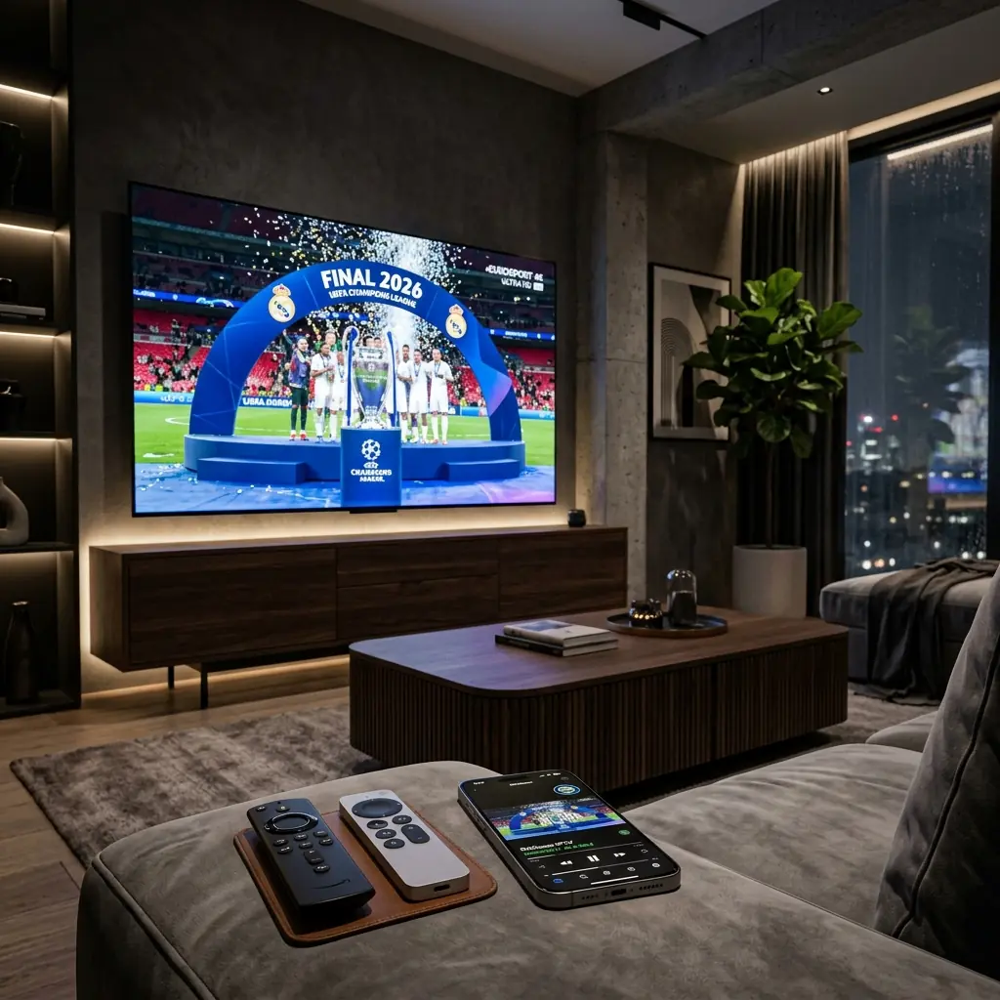

The stage is set. The lights of the Puskás Aréna in Budapest are shining brighter than ever. The 2026 UEFA Champions League Final is not just another football match; it is an absolute global spectacle that stops the world for 90 minutes (or potentially 120 minutes of heart-stopping extra time). The culmination of the European football calendar brings unparalleled intensity, dramatic narratives, and athletic brilliance that fans everywhere anxiously anticipate for an entire year.
Imagine this: it's the 89th minute, the score is tied, and a world-class striker breaks past the final defender. He lines up the shot, the crowd takes a collective breath, and just as the ball leaves his boot... your screen freezes. The circle of doom spins endlessly. The audio cuts out. Your neighbor screams in triumph through the wall, spoiling the goal completely. You frantically refresh the app, but it’s too late. The moment is gone forever. This nightmare scenario is all too common during mega-events like the Champions League Final, and it's a completely unacceptable way to experience the pinnacle of the sport.
To witness every incredible save, every precision pass, and every spectacular goal in absolute perfection, standard cable or mainstream streaming applications simply will not suffice. They are notoriously prone to catastrophic failure under the immense pressure of global simultaneous viewership. This ultimate, comprehensive guide will detail exactly why standard apps fail, the incredible technology behind flawless 4K IPTV, how to perfectly optimize your specific streaming devices, and how to outsmart internet throttling to ensure a magnificent viewing experience.
The Hype: Why Budapest 2026 Demands Perfection
The 2026 UEFA Champions League Final in Budapest is poised to be one of the most heavily viewed sporting events in human history. The stakes have never been higher, with modern squads exhibiting tactical genius and physical prowess that require a perfect visual feed to truly appreciate. When a winger executes a blazing fast counter-attack down the flank, heavily compressed, low-bitrate streams dissolve into a blurry, unwatchable mess of pixelation. Football is a game of continuous, fluid motion, and any drop in frame rate or resolution completely destroys the immersion.
Standard streaming platforms, the ones heavily promoted by traditional broadcasters, simply are not engineered to handle the massive, sudden spike in concurrent traffic that occurs when the referee blows the starting whistle. Millions of people logging in at the exact same second create monumental bottlenecks on centralized servers. This leads to the inevitable buffering, sudden disconnections, and severely degraded video quality that plague casual viewers.
Furthermore, the social aspect of the Final adds intense pressure to stay perfectly synchronized. If your stream lags behind the live broadcast by even 15 seconds, your phone will explode with notifications from Twitter, WhatsApp, and Reddit before the action unfolds on your screen. You need a dedicated, professional-grade streaming solution that bypasses these massive consumer bottlenecks, delivering the RAW, uncompressed stadium feed directly to your living room in real-time.
The 'Anti-Freeze 10.0' Advantage: Dominating the Final
To overcome the massive infrastructure challenges of streaming the Champions League Final, you need specialized technology. This is where ottocean stands completely apart from the competition. We do not rely on standard, easily overwhelmed servers. We utilize our proprietary, industry-leading Anti-Freeze 10.0 technology to guarantee an absolutely flawless, zero-lag experience, regardless of global traffic volume.
Intelligent, Dynamic Load Balancing
During the Final, our sophisticated network architecture continuously analyzes the real-time load across hundreds of global edge servers. When you connect, our Anti-Freeze 10.0 system instantly identifies and routes your connection to the specific server with the maximum available headroom at that exact millisecond. This prevents any single node from reaching critical mass, completely eliminating the server-side buffering that crashes standard apps.
Dedicated Sports-Only Bandwidth Allocation
We actively protect the Champions League feed. Our network infrastructure implements strict traffic shaping, segregating the immense bandwidth required for live 4K sports from regular VOD or standard channel traffic. By reserving massive, isolated chunks of our network backbone strictly for the Final, we ensure that the uncompressed, high-bitrate video stream flows completely unimpeded to your device. You receive the true, vibrant colors of the pitch and the buttery-smooth 60fps motion exactly as the broadcast cameras capture it.
Device-Specific Optimization: Achieving the Best 4K HDR Profile
Even with access to our incredibly powerful dedicated sports servers, your local hardware must be optimally configured to process the massive 4K HDR data stream without stuttering. Here are the essential setup steps for the most popular streaming devices to ensure perfect visual fidelity during the match.
Optimizing Your Amazon Firestick
The Firestick is highly capable, but it requires specific tuning for uncompressed live sports feeds.
- Mandatory Hardwiring: Do not rely on Wi-Fi for the Champions League Final. Even the best wireless routers are subject to micro-interference that causes packet loss and stuttering. Use an official Amazon Ethernet adapter to secure a rock-solid, uninterrupted data flow.
- Maximize Device Memory: Before the pre-game show begins, navigate to Settings > Applications > Manage Installed Applications. Force close every single app except your primary IPTV player, and clear the cache. This frees up crucial RAM, allowing the Firestick's processor to devote 100% of its resources to flawlessly decoding the heavy 4K stream.
- Optimize Display Settings: Go to Settings > Display & Sounds. Ensure the resolution is set to the highest possible output (4K Ultra HD) and that Match Original Frame Rate is set to ON.
Maximizing Your Apple TV 4K
The Apple TV 4K is arguably the most powerful dedicated streaming device on the market, perfectly suited for live sports. To fully unlock its potential, read our comprehensive How to Setup IPTV on Apple TV 4K guide.
- Enable Match Content: This is critical. Go to Settings > Video and Audio > Match Content. Turn ON both "Match Dynamic Range" and "Match Frame Rate." This ensures the Apple TV outputs the exact 50fps/60fps frame rate of the live broadcast, providing perfectly smooth panning shots without any judder when the camera follows a long pass.
- Use Premium Software: Utilize high-end, hardware-accelerated IPTV applications that integrate deeply with tvOS, such as iPlayTV or optimized versions of IPTV Smarters, to perfectly process the immense 4K HDR bitrates.
Smart TV Setup Strategies
If you are using an app directly on your LG, Samsung, or Android Smart TV, follow these rules:
- Enable Game/Sports Mode: Most modern TVs apply heavy post-processing effects (like motion smoothing) that actually harm live sports by creating visual artifacts. Turn on 'Game Mode' or 'Sports Mode' to disable these effects, drastically reducing input lag and ensuring raw, unadulterated picture quality.
- Ethernet Connection: Always plug an Ethernet cable directly into the back of your Smart TV. Internal TV Wi-Fi chips are notoriously underpowered and will struggle with heavy 4K streams.
ISP Bypass: Preventing Game-Time Blackouts
You have optimized your Firestick, connected to our dedicated Anti-Freeze servers, and the match is underway. Suddenly, the quality drops to 480p, or the stream completely disconnects. This is a classic symptom of Internet Service Provider (ISP) throttling. Major ISPs actively monitor network traffic and deliberately choke connections that are pulling massive amounts of data during peak sports events.
This is a completely artificial bottleneck designed to save the ISP money at the expense of your viewing experience. If you want to dive deep into exactly how they do this and how to completely defeat it, you must read our detailed Why is My IPTV Blocked? guide.
The absolute best defense against ISP throttling is the utilization of a high-tier Virtual Private Network (VPN). By passing your connection through heavily encrypted tunnels, you completely blind your ISP to your activities. They cannot see that you are streaming the Champions League Final; they only see an encrypted data stream. Because they cannot identify the traffic, their automated throttling algorithms are rendered completely useless, ensuring your bandwidth remains wide open and blazing fast for the entire 90 minutes.
Whether you are tuning into European football, or reading up on the Best IPTV for NBA Playoffs 2026, securing your network against ISP interference is the single most important step for a reliable sports streaming experience.
Direct Pitch: The #1 Solution for the Final
The 2026 UEFA Champions League Final in Budapest is a monumental event that deserves to be viewed with absolute perfection. You cannot afford to trust your viewing experience to generic streaming apps that will inevitably buckle under the immense pressure of millions of simultaneous viewers. You need a service engineered from the ground up for massive, high-stakes live sports broadcasting.
We explicitly recommend ottocean as the definitive, #1 solution for watching the Champions League Final without a single moment of interruption. We do not just promise stability; we have heavily invested in the infrastructure to guarantee it. With our exclusive, highly dedicated sports servers, unparalleled RAW 4K feed quality, and our revolutionary Anti-Freeze 10.0 technology, we completely eliminate the risks of buffering, latency, and sudden disconnections.
When you choose our service, you are securing VIP access to the most reliable, highest-fidelity stream available on the internet. We have built our flawless reputation by delivering rock-solid performance during the absolute biggest events in the world, and the 2026 Final will be no exception.
Do not wait until the pre-game show is stuttering. Secure your ultimate, buffer-free connection today, optimize your hardware, and prepare to experience the beautiful game in breathtaking 4K HDR. The trophy is waiting. Make sure you don't miss a single second of the action.